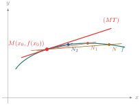
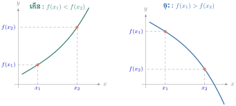
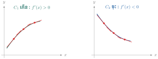
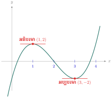
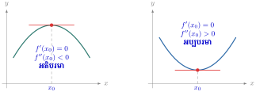
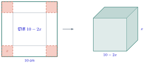
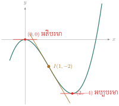
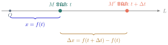

- រកសមីការនៃបន្ទាត់ប៉ះនឹងក្រាបតាងអនុគមន៍នៅត្រង់ចំណុចមួយ
- សិក្សាទិសដៅអថេរភាពនៃអនុគមន៍ទៅតាមសញ្ញានៃដេរីវេ
- រកតម្លៃអតិបរមានិងអប្បបរមាធៀបនៃអនុគមន៍ ហើយដោះស្រាយចំណោទតម្លៃអតិបរមានិងអប្បបរមា
- រកចំណុចរបត់នៃក្រាបតាងអនុគមន៍ពហុធាដឺក្រេទី 3
- រកល្បឿននៃចលនាដោយប្រើដេរីវេនៃអនុគមន៍ចម្ងាយចរ ។
1. បន្ទាត់ប៉ះនឹងក្រាបតាងអនុគមន៍
គេមានចំណុច \(\displaystyle M(x_0, f(x_0))\) និង \(\displaystyle N(x, f(x))\) នៅលើក្រាបនៃ \(\displaystyle f\) ។ ខ្សែកាត់ \(\displaystyle MN\) មានមេគុណប្រាប់ទិស \(\displaystyle \dfrac{f(x) - f(x_0)}{x - x_0}\) ។

បើ \(\displaystyle N\) ផ្លាស់ទីលើក្រាបហើយខិតជិត \(\displaystyle M\) នោះខ្សែកាត់ \(\displaystyle MN\) ងាកទៅរកទីតាំងលីមីត \(\displaystyle (MT)\) ហៅថា បន្ទាត់ប៉ះ នឹងក្រាបត្រង់ \(\displaystyle M\) ។ មេគុណប្រាប់ទិសនៃវាជាលីមីតនៃមេគុណប្រាប់ទិសរបស់ខ្សែកាត់ ៖
បន្ទាត់ប៉ះនឹងក្រាបនៃ \(\displaystyle f\) ត្រង់ចំណុច \(\displaystyle M(x_0, y_0)\) មានសមីការ
\(\displaystyle f(x) = x^3 - x^2 + 2\) មានក្រាប \(\displaystyle C\) ។ ក. រកបន្ទាត់ប៉ះនឹង \(\displaystyle C\) ត្រង់ \(\displaystyle A(1, 2)\) ។ ខ. បន្ទាត់ \(\displaystyle L\) មានមេគុណប្រាប់ទិស \(\displaystyle 5\) ហើយប៉ះនឹង \(\displaystyle C\) ។ រកចំណុចប៉ះនិងសមីការបន្ទាត់ប៉ះ ។
ក. \(\displaystyle f'(x) = 3x^2 - 2x\), \(\displaystyle f'(1) = 1\) ។ ដូច្នេះ \(\displaystyle y - 2 = 1\cdot(x - 1)\) ឬ \(\displaystyle y = x + 1\) ។
ខ. តាង \(\displaystyle a\) ជាអាប់ស៊ីសចំណុចប៉ះ ។ \(\displaystyle f'(a) = 5\) ឱ្យ \(\displaystyle 3a^2 - 2a - 5 = 0\) ហើយ \(\displaystyle a = -1\) ឬ \(\displaystyle a = \dfrac53\) ។
- \(\displaystyle a = -1\) ៖ \(\displaystyle f(-1) = 0\) ចំណុចប៉ះ \(\displaystyle (-1, 0)\) និង \(\displaystyle L_1 : y = 5(x + 1) = 5x + 5\) ។
- \(\displaystyle a = \dfrac53\) ៖ \(\displaystyle f\!\left(\dfrac53\right) = \dfrac{104}{27}\) ចំណុចប៉ះ \(\displaystyle \left(\dfrac53, \dfrac{104}{27}\right)\) និង \(\displaystyle L_2 : y = 5x - \dfrac{121}{27}\) ។
- រកបន្ទាត់ប៉ះនឹងក្រាបនៃ \(\displaystyle y = -x^2 + x + 3\) ត្រង់ \(\displaystyle x = 2\) ។
- រកបន្ទាត់ប៉ះនឹងក្រាបនៃ \(\displaystyle y = -x^3 + 3x + 4\) ហើយស្របនឹងបន្ទាត់ \(\displaystyle y = 3x\) ។
- រកបន្ទាត់ \(\displaystyle D\) ដែលប៉ះនឹង \(\displaystyle C : y = x^3 - 4x\) ត្រង់ \(\displaystyle A(1, -3)\) ។ ទាញរកចំណុចប្រសព្វមួយទៀតនៃ \(\displaystyle D\) និង \(\displaystyle C\) ។
មើលចម្លើយ
ក. \(\displaystyle y = -3x + 7\) ខ. \(\displaystyle y = 3x + 4\) គ. \(\displaystyle D : y = -x - 2\) ; ចំណុចប្រសព្វ \(\displaystyle (-2, 0)\) (ពី \(\displaystyle x^3 - 3x + 2 = (x-1)^2(x+2) = 0\)) ។
2. ទិសដៅអថេរភាពនៃអនុគមន៍
2.1. អនុគមន៍កើន អនុគមន៍ចុះ
- \(\displaystyle f\) កើន លើចន្លោះ \(\displaystyle I\) កាលណា \(\displaystyle \forall x_1, x_2 \in I\), \(\displaystyle x_1 < x_2 \Rightarrow f(x_1) < f(x_2)\) ។
- \(\displaystyle f\) ចុះ លើចន្លោះ \(\displaystyle I\) កាលណា \(\displaystyle \forall x_1, x_2 \in I\), \(\displaystyle x_1 < x_2 \Rightarrow f(x_1) > f(x_2)\) ។

បង្ហាញថា \(\displaystyle f(x) = x^2\) កើនចំពោះ \(\displaystyle x > 0\) ហើយចុះចំពោះ \(\displaystyle x < 0\) ។
\(\displaystyle f(x_2) - f(x_1) = (x_2 + x_1)(x_2 - x_1)\) ។ បើ \(\displaystyle 0 < x_1 < x_2\) នោះ \(\displaystyle (x_2 + x_1) > 0\) និង \(\displaystyle (x_2 - x_1) > 0\) ដូច្នេះ \(\displaystyle f(x_2) > f(x_1)\) : \(\displaystyle f\) កើន ។ បើ \(\displaystyle x_1 < x_2 < 0\) នោះ \(\displaystyle x_2 + x_1 < 0\) ហើយ \(\displaystyle x_2 - x_1 > 0\) ដូច្នេះ \(\displaystyle f(x_2) < f(x_1)\) : \(\displaystyle f\) ចុះ ។
ក. បង្ហាញថា \(\displaystyle y = x^3\) កើនជានិច្ច ។ ខ. \(\displaystyle y = 1 - x^2\) កើនឬចុះ ចំពោះ \(\displaystyle x > 0\) ?
មើលចម្លើយ
ក. \(\displaystyle x_2^3 - x_1^3 = (x_2 - x_1)\left[\left(x_1 + \frac{x_2}2\right)^2 + \frac34x_2^2\right] > 0\) ខ. ចុះ ។
2.2. ដេរីវេនិងទិសដៅអថេរភាព

បន្ទាត់ប៉ះទាំងអស់នៃខ្សែកោងកើនមានមេគុណប្រាប់ទិសវិជ្ជមាន ហើយនៃខ្សែកោងចុះមានមេគុណប្រាប់ទិសអវិជ្ជមាន ។
លើចន្លោះ \(\displaystyle (a, b)\) ៖
- \(\displaystyle f\) កើន លុះត្រាតែ \(\displaystyle f'(x) > 0\) គ្រប់ \(\displaystyle x \in (a, b)\) ;
- \(\displaystyle f\) ចុះ លុះត្រាតែ \(\displaystyle f'(x) < 0\) គ្រប់ \(\displaystyle x \in (a, b)\) ;
- \(\displaystyle f\) ថេរ លុះត្រាតែ \(\displaystyle f'(x) = 0\) គ្រប់ \(\displaystyle x \in (a, b)\) ។
កំណត់ចន្លោះដែល \(\displaystyle f(x) = 4x^3 + 5x - 9\) កើន ។
\(\displaystyle f'(x) = 12x^2 + 5 > 0\) គ្រប់ \(\displaystyle x \in \mathbb{R}\) ព្រោះ \(\displaystyle 12x^2 \ge 0\) ។ ដូច្នេះ \(\displaystyle f\) កើនលើ \(\displaystyle \mathbb{R}\) ។
កំណត់ \(\displaystyle m\) ដើម្បីឱ្យ \(\displaystyle f(x) = (m-1)x^2 + m^2 + m + 1\) ចុះចំពោះ \(\displaystyle x > 0\) ។
\(\displaystyle f'(x) = 2(m-1)x\) ។ \(\displaystyle f\) ចុះចំពោះ \(\displaystyle x > 0\) លុះត្រាតែ \(\displaystyle 2(m-1)x < 0\) គ្រប់ \(\displaystyle x > 0\) ឬ \(\displaystyle m - 1 < 0\) ។ ដូច្នេះ \(\displaystyle m \in (-\infty, 1)\) ។
ក. កំណត់ចន្លោះដែល \(\displaystyle f(x) = -x^3 + x^2 + 5x - 6\) កើនឬចុះ ។ ខ. រក \(\displaystyle a\) ដើម្បីឱ្យ \(\displaystyle g(x) = x^3 + ax^2 + \frac13x - 4\) កើនជានិច្ច ។
មើលចម្លើយ
ក. \(\displaystyle f'(x) = -(3x-5)(x+1)\) ៖ ចុះលើ \(\displaystyle (-\infty, -1)\) និង \(\displaystyle \left(\frac53, +\infty\right)\) ; កើនលើ \(\displaystyle \left(-1, \frac53\right)\) ។ ខ. \(\displaystyle g'(x) = 3x^2 + 2ax + \frac13 \ge 0\) គ្រប់ \(\displaystyle x\) លុះត្រាតែ \(\displaystyle \Delta' = a^2 - 1 \le 0\) ហើយ \(\displaystyle a \in [-1, 1]\) ។ (ចំពោះ \(\displaystyle a = \pm1\), \(\displaystyle g'\) សូន្យត្រឹមចំណុចតែមួយ ដូច្នេះ \(\displaystyle g\) នៅតែកើនជានិច្ច ។ ចម្លើយក្នុងសៀវភៅ \(\displaystyle (-1, 1)\) ខ្វះចុងពីរ ។)
3. អតិបរមាធៀប និងអប្បបរមាធៀប
3.1. ប្រើដេរីវេទី 1
ឧទាហរណ៍ : \(\displaystyle f(x) = x^3 - 6x^2 + 9x - 2\) មាន \(\displaystyle f'(x) = 3x^2 - 12x + 9 = 3(x-1)(x-3)\) ។
| \(\displaystyle x\) | \(\displaystyle -\infty\) | \(\displaystyle 1\) | \(\displaystyle 3\) | \(\displaystyle +\infty\) | |||
| \(\displaystyle f'(x)\) | \(\displaystyle +\) | \(\displaystyle 0\) | \(\displaystyle -\) | \(\displaystyle 0\) | \(\displaystyle +\) | ||
| \(\displaystyle f(x)\) | \(\displaystyle \nearrow\) | \(\displaystyle 2\) | \(\displaystyle \searrow\) | \(\displaystyle -2\) | \(\displaystyle \nearrow\) |
\(\displaystyle f(1) = 2\) ជាតម្លៃអតិបរមាធៀប ហើយ \(\displaystyle f(3) = -2\) ជាតម្លៃអប្បបរមាធៀប ។

\(\displaystyle f\) មាន អតិបរមាធៀប ត្រង់ \(\displaystyle x_0\) កាលណា \(\displaystyle f'(x_0) = 0\) ហើយ \(\displaystyle f'\) ដូរសញ្ញាពី \(\displaystyle +\) ទៅ \(\displaystyle -\) ។
\(\displaystyle f\) មាន អប្បបរមាធៀប ត្រង់ \(\displaystyle x_0\) កាលណា \(\displaystyle f'(x_0) = 0\) ហើយ \(\displaystyle f'\) ដូរសញ្ញាពី \(\displaystyle -\) ទៅ \(\displaystyle +\) ។
បង្ហាញថា \(\displaystyle f(x) = -x^3 + 3x^2 + 1\) មានអតិបរមាធៀបនិងអប្បបរមាធៀប ហើយគណនាតម្លៃទាំងពីរ ។
\(\displaystyle f'(x) = -3x^2 + 6x = 3x(2 - x) = 0\) ឱ្យ \(\displaystyle x = 0\) ឬ \(\displaystyle x = 2\) ។
| \(\displaystyle x\) | \(\displaystyle -\infty\) | \(\displaystyle 0\) | \(\displaystyle 2\) | \(\displaystyle +\infty\) | |||
| \(\displaystyle f'(x)\) | \(\displaystyle -\) | \(\displaystyle 0\) | \(\displaystyle +\) | \(\displaystyle 0\) | \(\displaystyle -\) | ||
| \(\displaystyle f(x)\) | \(\displaystyle \searrow\) | \(\displaystyle 1\) | \(\displaystyle \nearrow\) | \(\displaystyle 5\) | \(\displaystyle \searrow\) |
\(\displaystyle f'\) ដូរសញ្ញាពី \(\displaystyle -\) ទៅ \(\displaystyle +\) ត្រង់ \(\displaystyle x = 0\) : អប្បបរមាធៀប \(\displaystyle f(0) = 1\) ។ \(\displaystyle f'\) ដូរពី \(\displaystyle +\) ទៅ \(\displaystyle -\) ត្រង់ \(\displaystyle x = 2\) : អតិបរមាធៀប \(\displaystyle f(2) = 5\) ។
រក \(\displaystyle m\) ដើម្បីឱ្យ \(\displaystyle y = x^3 + 3mx^2 - mx + 1\) មានអតិបរមាធៀបនិងអប្បបរមាធៀប ។
ត្រូវការ \(\displaystyle y' = 3x^2 + 6mx - m = 0\) មានឫសពីរផ្សេងគ្នា ឬ \(\displaystyle \Delta' = 9m^2 + 3m = 3m(3m+1) > 0\) ។ ដូច្នេះ \(\displaystyle m \in \left(-\infty, -\frac13\right) \cup (0, +\infty)\) ។
រក \(\displaystyle k\) ដើម្បីឱ្យ \(\displaystyle y = \frac13x^3 + kx^2 + (2k+3)x\) គ្មានបរមាធៀប ។ ចម្លើយ \(\displaystyle y' = x^2 + 2kx + 2k + 3 \ge 0\) គ្រប់ \(\displaystyle x\) លុះត្រាតែ \(\displaystyle \Delta' = k^2 - 2k - 3 \le 0\) ហើយ \(\displaystyle k \in [-1, 3]\) ។
3.2. ប្រើដេរីវេទី 2

បើ \(\displaystyle f'\) ជាអនុគមន៍ចុះនៅជិត \(\displaystyle x_0\) (មានន័យថា \(\displaystyle f'' < 0\)) នោះត្រង់ \(\displaystyle x_0\) ជាអតិបរមា ; បើ \(\displaystyle f'\) កើន (\(\displaystyle f'' > 0\)) នោះជាអប្បបរមា ។
បើ \(\displaystyle f'(x_0) = 0\) ៖ \(\displaystyle f''(x_0) < 0 \Rightarrow\) អតិបរមាធៀប ; \(\displaystyle f''(x_0) > 0 \Rightarrow\) អប្បបរមាធៀប ។
បើ \(\displaystyle f''(x_0) = 0\) នោះត្រូវត្រឡប់ទៅសិក្សាសញ្ញានៃ \(\displaystyle f'\) វិញ ។
រកអតិបរមាធៀបនិងអប្បបរមាធៀបនៃ \(\displaystyle f(x) = x^3 - 12x^2\) ។
\(\displaystyle f'(x) = 3x^2 - 24x = 3x(x - 8) = 0\) ឱ្យ \(\displaystyle x = 0\) ឬ \(\displaystyle x = 8\) ។ \(\displaystyle f''(x) = 6x - 24\) ។ \(\displaystyle f''(0) = -24 < 0\) : អតិបរមាធៀប \(\displaystyle f(0) = 0\) ។ \(\displaystyle f''(8) = 24 > 0\) : អប្បបរមាធៀប \(\displaystyle f(8) = -256\) ។
រកអតិបរមាធៀបនិងអប្បបរមាធៀបនៃ \(\displaystyle f(x) = x^4 - 4x^3 + 2\) ។
មើលចម្លើយ
\(\displaystyle f'(x) = 4x^2(x - 3)\) ហើយ \(\displaystyle f''(x) = 12x(x-2)\) ។ \(\displaystyle f''(3) = 36 > 0\) : អប្បបរមាធៀប \(\displaystyle f(3) = -25\) ។ ត្រង់ \(\displaystyle x = 0\) មាន \(\displaystyle f''(0) = 0\) ហើយ \(\displaystyle f'\) មិនដូរសញ្ញា (\(\displaystyle f' \le 0\)) ដូច្នេះគ្មានអតិបរមាធៀប ។
3.3. ចំណោទតម្លៃអតិបរមានិងអប្បបរមា
ក្រដាសក្រាស់ការេមួយមានជ្រុង \(\displaystyle 10\text{ cm}\) ។ គេកាត់ការេតូចជ្រុង \(\displaystyle x\) ចេញពីកំពូលទាំងបួន ហើយបត់ជាប្រអប់គ្មានគម្រប ។ រក \(\displaystyle x\) ដើម្បីឱ្យមាឌធំបំផុត ។

លក្ខខណ្ឌ \(\displaystyle 0 < x < 5\) ។ មាឌ \(\displaystyle V(x) = (10 - 2x)^2 x = 4x^3 - 40x^2 + 100x\) ។ \(\displaystyle V'(x) = 12x^2 - 80x + 100 = 4(3x - 5)(x - 5)\) ។ លើ \(\displaystyle (0, 5)\) មានតែ \(\displaystyle x = \dfrac53\) ។ \(\displaystyle V'\) ដូរពី \(\displaystyle +\) ទៅ \(\displaystyle -\) ត្រង់ \(\displaystyle x = \frac53\) ។
| \(\displaystyle x\) | \(\displaystyle 0\) | \(\displaystyle \frac53\) | \(\displaystyle 5\) | ||
| \(\displaystyle V'(x)\) | \(\displaystyle +\) | \(\displaystyle 0\) | \(\displaystyle -\) | ||
| \(\displaystyle V(x)\) | \(\displaystyle \nearrow\) | \(\displaystyle \frac{2000}{27}\) | \(\displaystyle \searrow\) |
ដូច្នេះ \(\displaystyle x = \dfrac53\text{ cm}\) ហើយមាឌធំបំផុតគឺ \(\displaystyle V = \left(10 - \dfrac{10}3\right)^2\cdot\dfrac53 = \dfrac{2000}{27}\text{ cm}^3\) ។
ស៊ីឡាំងមួយចារឹកក្នុងស្វ៊ែរកាំ \(\displaystyle R\) ។ ក. រកកម្ពស់ស៊ីឡាំងដើម្បីឱ្យមាឌធំបំផុត ។ ខ. រកមាឌធំបំផុតនោះ ។
មើលចម្លើយ
តាង \(\displaystyle h\) ជាកម្ពស់ (\(\displaystyle 0 < h < 2R\)) ។ \(\displaystyle r^2 = R^2 - \frac{h^2}4\) ហើយ \(\displaystyle V = \pi\left(R^2 - \frac{h^2}4\right)h\), \(\displaystyle V' = \pi\left(R^2 - \frac{3h^2}4\right) = 0\) ឱ្យ \(\displaystyle h = \dfrac{2\sqrt3}3R\) ។ ក. \(\displaystyle h = \dfrac{2\sqrt3}{3}R\) ខ. \(\displaystyle V_{\max} = \dfrac{4\sqrt3}{9}\pi R^3\) ។
4. ចំណុចរបត់នៃខ្សែកោង
ឧទាហរណ៍ : \(\displaystyle f(x) = x^3 - 3x^2\) មាន \(\displaystyle f'(x) = 3x(x-2)\) ហើយ \(\displaystyle f''(x) = 6x - 6\) ។ \(\displaystyle f''(x) = 0\) ត្រង់ \(\displaystyle x = 1\) ហើយ \(\displaystyle f''\) ដូរសញ្ញាពី \(\displaystyle -\) ទៅ \(\displaystyle +\) ។
| \(\displaystyle x\) | \(\displaystyle -\infty\) | \(\displaystyle 0\) | \(\displaystyle 1\) | \(\displaystyle 2\) \(\displaystyle \to+\infty\) | |||
| \(\displaystyle f''(x)\) | \(\displaystyle -\) | \(\displaystyle -\) | \(\displaystyle -\) | \(\displaystyle 0\) | \(\displaystyle +\) | \(\displaystyle +\) | |
| \(\displaystyle f(x)\) | ប៉ោង | អតិបរមា \(\displaystyle 0\) | ប៉ោង | \(\displaystyle -2\) | ផត | អប្បបរមា \(\displaystyle -4\) |

ខ្សែកោងប្តូរពីប៉ោង (ដែលនៅក្រោមបន្ទាត់ប៉ះ) ទៅផត ត្រង់ \(\displaystyle I(1, -2)\) ហៅថា ចំណុចរបត់ ។
វិធីរកចំណុចរបត់នៃ \(\displaystyle y = f(x)\) ៖ (1) រក \(\displaystyle f''(x)\) ; (2) ដោះស្រាយ \(\displaystyle f''(x) = 0\) ; (3) សិក្សាសញ្ញា \(\displaystyle f''\) ។ បើ \(\displaystyle f''\) ដូរសញ្ញាសងខាង \(\displaystyle x_0\) នោះ \(\displaystyle I(x_0, f(x_0))\) ជាចំណុចរបត់ ; បើមិនដូរ នោះមិនមានទេ ។
រកចំណុចរបត់នៃ \(\displaystyle y = x^3 - 3x + 1\) ។
\(\displaystyle y' = 3x^2 - 3\), \(\displaystyle y'' = 6x\) ។ \(\displaystyle y'' = 0\) ត្រង់ \(\displaystyle x = 0\) ហើយ \(\displaystyle y''\) ដូរពី \(\displaystyle -\) ទៅ \(\displaystyle +\) ។ \(\displaystyle y(0) = 1\) ដូច្នេះ \(\displaystyle I(0, 1)\) ជាចំណុចរបត់ ។
ក. រកចំណុចរបត់នៃ \(\displaystyle y = x^4 - 6x^2\) ។ ខ. \(\displaystyle y = \frac14x^4 - \frac13x^3 + \frac12x^2 - 1\) មានចំណុចរបត់ឬទេ ?
មើលចម្លើយ
ក. \(\displaystyle y'' = 12x^2 - 12 = 12(x-1)(x+1)\) ដូរសញ្ញាត្រង់ \(\displaystyle x = \pm1\) ហើយ \(\displaystyle y(\pm1) = -5\) : ចំណុចរបត់ \(\displaystyle (-1, -5)\) និង \(\displaystyle (1, -5)\) ។ (ចម្លើយក្នុងសៀវភៅ \(\displaystyle \left(\pm\frac23\sqrt6, -\frac{320}9\right)\) ខុស ។) ខ. \(\displaystyle y'' = 3x^2 - 2x + 1\) មាន \(\displaystyle \Delta = -8 < 0\) ដូច្នេះ \(\displaystyle y'' > 0\) ជានិច្ច ហើយគ្មានចំណុចរបត់ ។
5. ល្បឿននៃចលនាត្រង់
ចំណុច \(\displaystyle M\) ផ្លាស់ទីលើបន្ទាត់ ហើយមានចម្ងាយចរ \(\displaystyle x = f(t)\) ។ ល្បឿនមធ្យមពីខណៈ \(\displaystyle t\) ដល់ \(\displaystyle t + \Delta t\) គឺ \(\displaystyle \dfrac{\Delta x}{\Delta t} = \dfrac{f(t + \Delta t) - f(t)}{\Delta t}\) ។

ល្បឿននៃ \(\displaystyle M\) នៅខណៈ \(\displaystyle t\) ៖ \(\displaystyle V = \displaystyle\lim_{\Delta t \to 0}\frac{\Delta x}{\Delta t} = \frac{dx}{dt} = f'(t)\) ។ ចំណុចប្តូរទិសដៅ កាលណា \(\displaystyle V\) ប្តូរសញ្ញា ។
\(\displaystyle M\) មានចម្ងាយចរ \(\displaystyle x = t^3 - 6t^2 + 9t + 10\) ។ ក. រកល្បឿននៅខណៈ \(\displaystyle t = \frac12\) និង \(\displaystyle t = 2\) ។ ខ. តើ \(\displaystyle M\) ប្តូរទិសដៅលើកដំបូងនៅខណៈណា ?
ក. \(\displaystyle V = 3t^2 - 12t + 9\) ។ \(\displaystyle V\!\left(\frac12\right) = \frac{15}4\) និង \(\displaystyle V(2) = -3\) ។
ខ. \(\displaystyle V = 3(t-1)(t-3) = 0\) ឱ្យ \(\displaystyle t = 1\) ឬ \(\displaystyle t = 3\) ។
| \(\displaystyle t\) | \(\displaystyle 0\) | \(\displaystyle 1\) | \(\displaystyle 3\) \(\displaystyle \to\) | ||
| \(\displaystyle V\) | \(\displaystyle +\) | \(\displaystyle 0\) | \(\displaystyle -\) | \(\displaystyle 0\ (+)\) |
\(\displaystyle V\) ប្តូរសញ្ញាលើកដំបូងត្រង់ \(\displaystyle t = 1\text{ s}\) ។
គេបោះបាល់ឡើងលើតាមទិសឈរដោយល្បឿនដើម \(\displaystyle 19.6\text{ m/s}\) ហើយកម្ពស់នៅខណៈ \(\displaystyle t\) គឺ \(\displaystyle S = -4.9t^2 + 19.6t\) ។ ក. រកល្បឿននៅខណៈ \(\displaystyle t = 1\) ។ ខ. រករយៈពេលនិងកម្ពស់ខ្ពស់បំផុត ។ គ. រករយៈពេលក្នុងលំហអាកាស ។ ឃ. រកចម្ងាយចរសរុប ។
មើលចម្លើយ
ក. \(\displaystyle v = -9.8t + 19.6\) ហើយ \(\displaystyle v(1) = 9.8\text{ m/s}\) ខ. \(\displaystyle v = 0\) ត្រង់ \(\displaystyle t = 2\text{ s}\) ហើយ \(\displaystyle S = 19.6\text{ m}\) គ. \(\displaystyle S = 0\) ត្រង់ \(\displaystyle t = 4\text{ s}\) ឃ. ឡើង \(\displaystyle 19.6\text{ m}\) ហើយធ្លាក់ចុះ \(\displaystyle 19.6\text{ m}\) : \(\displaystyle 39.2\text{ m}\) ។
លំហាត់
- \(\displaystyle f(x) = 2x^3 - 16x + 11\) មានក្រាប \(\displaystyle C\) ។ ក. រកបន្ទាត់ប៉ះនឹង \(\displaystyle C\) ត្រង់ \(\displaystyle A(2, -5)\) ។ ខ. រកបន្ទាត់ដែលមានមេគុណប្រាប់ទិស \(\displaystyle -10\) ហើយប៉ះនឹង \(\displaystyle C\) ។
- \(\displaystyle f(x) = 4x^3 + 9x^2 - 30x + 1\) មានក្រាប \(\displaystyle C\) ។ ក. រកកូអរដោនេចំណុចប៉ះនៃ \(\displaystyle C\) ដែលមានបន្ទាត់ប៉ះដេក ។ ខ. រកសមីការបន្ទាត់ប៉ះទាំងនោះ ។
- \(\displaystyle y = 3x^2 - 4x + 1\) មានក្រាប \(\displaystyle C\) ។ ក. រកបន្ទាត់ប៉ះនឹង \(\displaystyle C\) ហើយកែងនឹងបន្ទាត់ \(\displaystyle y = -\frac x5 + 2\) ។ ខ. រកបន្ទាត់ប៉ះនឹង \(\displaystyle C\) ហើយស្របនឹងបន្ទាត់ \(\displaystyle y = x + 5\) ។
- \(\displaystyle f(x) = x^3 - 3x\) មានក្រាប \(\displaystyle C\) ។ ក. រកបន្ទាត់ប៉ះនឹង \(\displaystyle C\) ត្រង់ចំណុច \(\displaystyle A\) អាប់ស៊ីស \(\displaystyle a\) ។ ខ. បន្ទាត់ប៉ះត្រង់ \(\displaystyle A\) កាត់ \(\displaystyle C\) ម្តងទៀតត្រង់ \(\displaystyle B\) ។ រកអាប់ស៊ីសនៃ \(\displaystyle B\) ។
- សិក្សាទិសដៅអថេរភាព រកអតិបរមា អប្បបរមា ហើយសង់តារាងអថេរភាពនៃ ក. \(\displaystyle y = -x^3 + 3x^2 + 4\) ខ. \(\displaystyle y = x(x-3)^2\) គ. \(\displaystyle y = -x^2(x-1)^2\) ។
- \(\displaystyle f(x) = x^3 + 3ax^2 + 3bx + 2\) មានអតិបរមាធៀបត្រង់ \(\displaystyle x = 1\) និងអប្បបរមាធៀបត្រង់ \(\displaystyle x = 2\) ។ ក. រកតម្លៃ \(\displaystyle a\) និង \(\displaystyle b\) ។ ខ. រកផលដករវាងតម្លៃអតិបរមាធៀបនិងអប្បបរមាធៀប ។
- \(\displaystyle f(x) = x^4 + 29\) និង \(\displaystyle g(x) = 4x^3\) មានក្រាប \(\displaystyle C_1\) និង \(\displaystyle C_2\) ។ បន្ទាត់ \(\displaystyle D\) ស្របអ័ក្សអរដោនេកាត់ \(\displaystyle C_1\) និង \(\displaystyle C_2\) ត្រង់ \(\displaystyle A\) និង \(\displaystyle B\) ។ រកប្រវែងអប្បបរមានៃ \(\displaystyle [AB]\) ។
- បន្ទះស័ង្កសីរាងត្រីកោណសម័ង្សជ្រុង \(\displaystyle a\) ។ គេកាត់ចេញពីកំពូលទាំងបីនូវចតុកោណប៉ុនៗគ្នា (ជ្រុង \(\displaystyle x\) តាមជ្រុងនៃត្រីកោណ ហើយមានមុំកែងពីរ) ហើយបត់ឱ្យបានប្រអប់ព្រីសត្រីមុខនិយ័តគ្មានគម្រប ។ រក \(\displaystyle x\) ដើម្បីឱ្យមាឌធំបំផុត ។
- ថ្មមួយដុំធ្លាក់ពីកម្ពស់ \(\displaystyle 88.2\text{ m}\) ហើយធ្លាក់បានចម្ងាយ \(\displaystyle 9.8t^2\text{ m}\) ក្នុងរយៈ \(\displaystyle t\) វិនាទី ។ ក. ប៉ុន្មានវិនាទីទើបប៉ះដី ? ខ. ល្បឿននៅខណៈ \(\displaystyle 2\text{ s}\) ? គ. ល្បឿននៅពេលប៉ះដី ?
- វត្ថុមួយត្រូវបានបាញ់ឡើងលើពីដីដោយល្បឿនដើម \(\displaystyle V_0 = 39.2\text{ m/s}\) ហើយ \(\displaystyle S = -4.9t^2 + 39.2t\) ។ ក. រកល្បឿននៅខណៈ \(\displaystyle t\) ។ ខ. កម្ពស់ខ្ពស់បំផុត និងពេលនោះ ? គ. រយៈពេលក្នុងលំហអាកាស ? ឃ. ចម្ងាយចរសរុប ?
ចម្លើយលំហាត់
- ក. \(\displaystyle y = 8x - 21\) ខ. \(\displaystyle y = -10x + 15\) (ចំណុចប៉ះ \(\displaystyle (-1, 25)\)) និង \(\displaystyle y = -10x + 7\) (ចំណុចប៉ះ \(\displaystyle (1, -3)\))
- ក. \(\displaystyle (1, -16)\) និង \(\displaystyle \left(-\frac52, \frac{279}4\right)\) ខ. \(\displaystyle y = -16\) និង \(\displaystyle y = \frac{279}4\)
- ក. \(\displaystyle y = 5x - \frac{23}4\) ខ. \(\displaystyle y = x - \frac{13}{12}\)
- ក. \(\displaystyle y = 3(a^2 - 1)x - 2a^3\) ខ. \(\displaystyle x_B = -2a\) ព្រោះ \(\displaystyle x^3 - 3x - \left[3(a^2-1)x - 2a^3\right] = (x - a)^2(x + 2a)\)
- ក. អប្បបរមា \(\displaystyle f(0) = 4\) ; អតិបរមា \(\displaystyle f(2) = 8\) ខ. អតិបរមា \(\displaystyle f(1) = 4\) ; អប្បបរមា \(\displaystyle f(3) = 0\) គ. អតិបរមា \(\displaystyle f(0) = f(1) = 0\) ; អប្បបរមា \(\displaystyle f\!\left(\frac12\right) = -\frac1{16}\)
- ក. \(\displaystyle a = -\frac32\), \(\displaystyle b = 2\) ខ. \(\displaystyle f(1) - f(2) = \frac92 - 4 = \frac12\)
- \(\displaystyle |AB| = x^4 + 29 - 4x^3\) អប្បបរមា \(\displaystyle = 2\) ត្រង់ \(\displaystyle x = 3\)
- \(\displaystyle V = \frac{x(a - 2x)^2}4\), \(\displaystyle V' = \frac{(a - 2x)(a - 6x)}4 = 0\) ឱ្យ \(\displaystyle x = \frac a6\) ហើយ \(\displaystyle V_{\max} = \frac{a^3}{54}\)
- ក. \(\displaystyle 3\text{ s}\) ខ. \(\displaystyle 39.2\text{ m/s}\) គ. \(\displaystyle 58.8\text{ m/s}\)
- ក. \(\displaystyle v = 39.2 - 9.8t\) ខ. \(\displaystyle 78.4\text{ m}\) ត្រង់ \(\displaystyle t = 4\text{ s}\) គ. \(\displaystyle 8\text{ s}\) ឃ. \(\displaystyle 156.8\text{ m}\)
ខ្លឹមសារ៖ សៀវភៅពុម្ពគណិតវិទ្យាថ្នាក់ទី១១ របស់ក្រសួងអប់រំ យុវជន និងកីឡា · វាយអត្ថបទ គូររូបភាពឡើងវិញ និងរៀបចំលើអនឡាញដោយលោកគ្រូ សាន សុខលី សម្រាប់ការសិក្សាដោយឥតគិតថ្លៃ និងមិនរកប្រាក់ចំណេញ។ មិនមែនជាការបោះពុម្ពផ្លូវការរបស់ក្រសួងទេ។